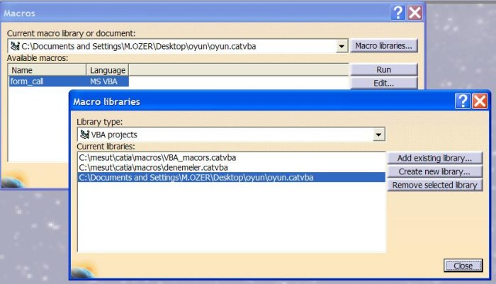
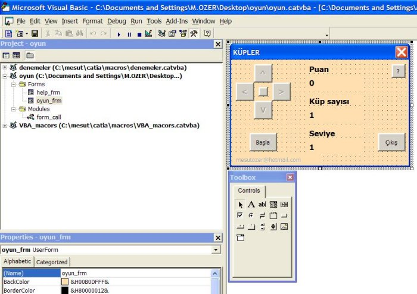
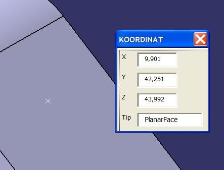

|
Bir
"catvba" dosyasý birden çok macroyu içerebilir.
Bu vba dosyasý bir macro kütüphanesidir (macro library) CATIA
içine yeni bir macro kütüphanesi ilave etmek için bu penceredeki
"Maco Libraries" butonu kullanýlýr.

Macro Libraries Penceresi
Bu
pencerede bulunan "Add existing library" seçeneði
ile var olan bir vba dosyasý CATIA içine dahil edilebilir.
Macrolar Edit ya da Ceate butonu ile açýlan VBA geliþtirme
ortamýnda yazýlýr.

VBA geliþtirme ortamý
Örnek bir makro - Koordinat Alma
Ýlgili
dosyalarý indirmek için týklayýnýz: koordinat.zip
(41KB)
CATIA
içine VBA ile kod yazýlmasýna iliþkin inceleyeceðimiz örneklerden
ilki, ekran üzerinde seçilen noktanýn x,y,z eksenlerindeki
koordinatlarýný alan ve gerektiðinde bu koordinata bir nokta
ekleyen bir macrodur.

Koordinat alma macrosu
Bu
macro arka planda sürekli aktif olarak kaldýðý için, hýzlý
koordinat deðerlerini alma ve noktalama iþlemlerinde kullanýcýya
önemli kazançlar sunabilir. Boþluk dýþýnda her nokta seçilebilir.
Macronun
kullanýmý, ilgili noktanýn seçilip, formun üzerine sol ya
da sað mouse tuþuna basýlmasý þeklindedir. Sol tuþa basýldýðýnda
form üzerindeki textbox'lara koordinat deðeri gelir. Sað tuþa
basýldýðýnda textbox'lara hem koordinat deðeri gelir, hem
de seçilen yerde nokta oluþturulur.
Baþlangýç
kodunun oluþturulmasý:
CATIA'da
yeni bir makro oluþturulduðunda (Create) ilgili vba dosyasýna
bir modül ilave edilir. Macroda bu modül "koordinat_alma"
ismindedir. Siz daha sonra, hangi formu çaðýrmak isterseniz
bu formun show metodunu kullanarak ekrana getirirsiniz.
secim_koord_frm.Show
vbModeless
Bu komur satýrý secim_koord_frm isimli formu ekrana getirmektedir.
Bu form ise bizim KOORDINAT isimli (caption) formumuzdur.
Satýr sonunda bulunan vbModeless ifadesi, formumuz aktifken
CATIA'nin da kullanýlabilmesini saðlayan bir ifadedir ve bu
makro için gereklidir.
Formun
oluþturulmasý:
Form
dört adet label (X,Y,Z ve Tip), dört adet textbox ve görünmeyen
(transparant) ve en üstte yer alan bir CommandButton'dan oluþur.
Bu commandbutton formun boþ bir yerine týklama zorluðunu ortadan
kaldýrmak için konulmuþtur.
Form
kodunun oluþturulmasý:
Form
üzerinde yapýlan iþlemler için (events) belli fonksiyonlarýn
ya da sub'larýn caðrýlmasý gerekir. Bu fonksiyon ya da sub'larýn
yapacaðý iþlemler, bizim programýmýzýn akýþýný belirler.
Form kodumuzda toplam üç adet sub bulunmaktadýr.
Private
Sub UserForm_Initialize()
...
...
End Sub
Bu sub macromuz ilk çalýþtýrýldýðýnda devreye girer ve CATIA'nýn
çalýþýp çalýþmadýðýný kontrol eder.
Private
Sub CommandButton1_Click()
...
...
End Sub
Bu sub en üstte bulunan gizli (transparant) commandbutton'nuna
týkladýðýnýzda devreye girer ve bu sub CATIA'da seçilen noktanýn
koordinatlarýný textbox'lar üzerine taþýr.
Private Sub CommandButton1_MouseDown(ByVal
Button As Integer, ByVal Shift As Integer, ByVal X As Single,
ByVal Y As Single)
...
...
End Sub
Bu sub gizli commandbutton üzerine sað mouse tuþu ile týklandýðýnda
devreye girer ve texboxlar üzerine seçilen noktanýn koordinatlarýn
yazdýktan sonra, seçilen yerde bir de nokta oluþturur.
|